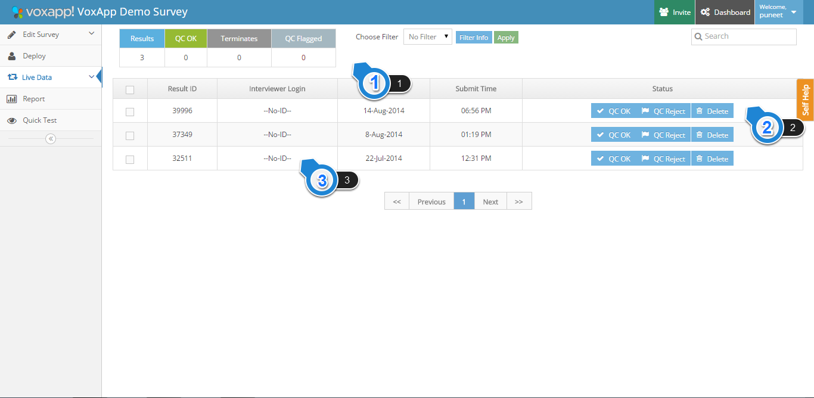
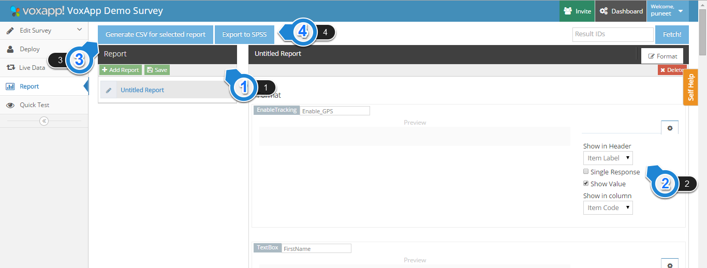

1.1. Live Data Dashboard

1. Overall Counts Section
This section shows the overall counts of the results submitted/synced in the system
Results: Count of total results submitted/synced in the system.
QC OK: Count of all the result which have been marked as ‘QC OK’ by the admin/QCTeam.
Terminates: Count of all the interview where respondent screened out as he/she did not meet the eligibility criteria for the survey.
QC Flagged: Count of all the result which have been marked as ‘QC Reject’ by the admin/QC Team.
2. QC Action Section
This section is/can be used by the admin/QC team to take actions on any specific interviews present in the system
QC OK: If marked, this result will show as a valid result in the report file/result sheet.
QC Reject: If marked, this result will show as a invalid result in the report file/result sheet.
Delete: If marked, this result will not show in the report file/result sheet.
Note: If no action is taken for any interview, it’s counted as ‘QC OK’ by default and is shown as a valid answer in the report file/result sheet.
3. Interview Section
When clicked on any of the interview, the interview expands to show all the questions which were asked to the user, and all the answers given for those questions(Open Ended, Audio, Image, and GPS Data on the Map).
Click on the interview again to collapse the interview. Alternatively, press on close button at the bottom right corner of every/any expanded interview.
1.2. Reporting Dashboard

1. Report Manager
This section is used to ‘Add Report’ and ‘Save’ changes done on an existing report
Add Report: When clicked adds a report for a specific survey.
Save: When clicked saves the latest changes done to an existing report.
2. Report Preview
This section is used to define how an individual question is represented on the report(CSV)
Show in Header: Used to define, whether ‘Label’ or ‘Code’ should be shown in the Header section for every question. In case of Labels, it can be changed in the text box provided for every question on the left. In case of Code, it directly fetches the code defined for every item at the time of scripting the survey.
Single Response: This should be selected for a single column representation of any question in the CSV i.e for every Single Answer question type, this should be checked.
Show Value: This should be selected for multiple column represenation of any question in the CSV i.e for every Multiple Answer question type, this should be checked.
Show in Column: Used to define, whether ‘Label’ or ‘Code’ should be shown in the columns for every question. In case of ‘Labels’ and ‘Code’, it directly fetches the labels and code defined for every item at the time of scripting the survey.
3. Report Generation Section
This section is used to generate a CSV for result submitted in the system till that point of time. To generate a CSV, follow these steps:
a) Select the report in the report manager which you want to generate.
b) Click on the ‘Generate CSV for Selected Report’ button.
c) In the text box, enter the email id to which you want the report to be mailed. In case of multiple email ids, please separate them by comma(,) Ex:
abc@xyz.com,
def@xyz.com
d) Click on the ‘Email’ button and the report is automatically sent to the mentioned email ids.
1.3. Deployment Dashboard
1. Overall Count Section
This section gives you the overall counts of devices synced with the system for any specific study
Deployed: Count of total devices to which the survey has been pushed/deployed.
Active: Count of total number of active devices to which the survey has been pushed/deployed.
Active Today: Count of total number of active devices on a given day to which the survey has been pushed/deployed.
2. Add Device Section
This section is used to create usernames/IDs for device(s). One or more usernames/IDs can be created using this section depending on the number of devices to be used in a study
To add device(s)/create IDs, click on ‘Add Devices’ button. A CSV of the usernames/passwords in the following format should be uploaded using the dialogue box:
| username |
password |
mobile |
|---|
| abc |
xyz123 |
9876543210 |
| def |
xyz123 |
1234567890 |
3. Action Section
This section is used to take an action on the added device(s). Select device(s) on which the desired action is to be taken using checkbox, and select of the following actions from the dropdown
Deploy Survey: Used to deploy/push a specific survey to a device(s).
Revoke: Used to remove/revoke a specific survey from a device(s). Please note, all the results will also be deleted from the device.
Delete Survey Agents: Used to delete usernames/IDs from the system for a specific survey.
4. Interviewer/Agent Section
This section provides following agent specific details:
Interviewer: Username/ID being used on a specific device.
Mobile: Interviewer/Agent mobile number added at the time of adding a device(s).
Status: Gives the current status of the username/ID/device. There are following status codes depending on the state of the device:
- Active: Survey is pushed/deployed to the username/ID/device and is currently active.
- Inactive: Survey is pushed/deployed to the username/ID/device but is currently inactive.
- Pending: Survey is pushed/deployed to the username/ID/device but has not been fetched by the device due to no internet connectivity or other similar reasons.
- Revoked: Survey is revoked/removed from the username/ID/device.
- Survey Deployment Failed: Survey deploy/push failed to no internet connectivity or some error in the survey scripting.
Deployed On: Date on which the survey was deployed/pushed to a specifc username/ID/device.
Last Submit: Date on which the last interview submission/sync was done by a specific username/ID/device.
Total Results: Total count of results submitted by a username/ID/device.
When clicked on any of the interviewer/agent name, the section expands to show the total interviews submitted by the interviewer/agent on every date.
Click on the interviewer/agent name again to collapse the interview.